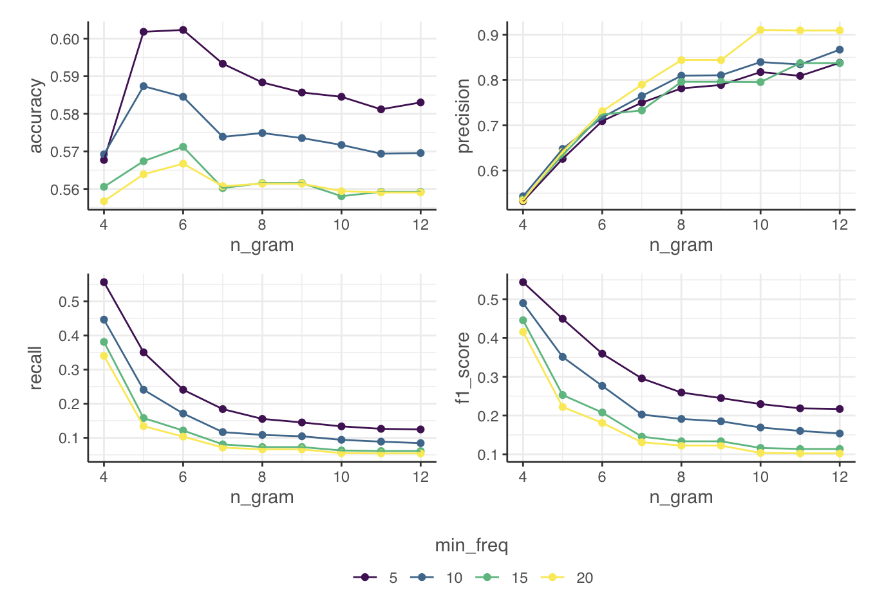

Quick Start - Code
Quick example of how to run the code for the functions - get a dataset with a text variable and:
limpiar_examples |>
limpiar_spam_grams(mention_content, n_gram = 3, min_freq = 2)
#> $spam_grams
#> # A tibble: 13 × 2
#> ngrams n
#> <chr> <int>
#> 1 amigo sancho es 2
#> 2 de vdd jajaja 2
#> 3 en una muy 2
#> 4 es un wn 2
#> 5 han metido en 2
#> 6 metido en una 2
#> 7 mi amigo sancho 2
#> 8 muy dificil situación 2
#> 9 nos han metido 2
#> 10 sancho es un 2
#> 11 un wn de 2
#> 12 una muy dificil 2
#> 13 wn de vdd 2
#>
#> $data
#> # A tibble: 6 × 6
#> doc_id author_name mention_content mention_url platform_interactions document
#> <int> <chr> <chr> <chr> <lgl> <int>
#> 1 3 edmond_dant… "@don_quijote … www.twitte… NA 3
#> 2 6 robert_jord… " Lo q no te… www.youtub… NA 6
#> 3 7 anselmo "a mi es muy g… www.twitte… NA 7
#> 4 8 maria "ayyy nooo @ro… www.twitte… NA 8
#> 5 9 pablo "todos se unen… www.instag… NA 9
#> 6 10 pilar "a mi me gusta… www.instag… NA 10
#>
#> $deleted
#> # A tibble: 4 × 6
#> doc_id author_name mention_content mention_url platform_interactions document
#> <int> <chr> <chr> <chr> <lgl> <int>
#> 1 1 don_quijote mi amigo sanch… www.twitte… NA 1
#> 2 2 sancho_panza RT mi amigo sa… www.twitte… NA 2
#> 3 4 el_sordo nos han metido… www.fakebo… NA 4
#> 4 5 commander_m… nos han metido… www.fakebo… NA 5
limpiar_examples |>
limpiar_near_duplicates(mention_content, similarity = 0.5)
#> $duplicates
#> # A tibble: 2 × 5
#> group mention_content n_duplicates mean_similarity min_similarity
#> <int> <chr> <int> <dbl> <dbl>
#> 1 1 mi amigo sancho es un wn de… 1 0.875 0.875
#> 2 4 nos han metido en una muy d… 1 1 1
#>
#> $data
#> # A tibble: 8 × 6
#> doc_id author_name mention_content mention_url platform_interactions document
#> <int> <chr> <chr> <chr> <lgl> <int>
#> 1 1 don_quijote "mi amigo sanc… www.twitte… NA 1
#> 2 3 edmond_dant… "@don_quijote … www.twitte… NA 3
#> 3 4 el_sordo "nos han metid… www.fakebo… NA 4
#> 4 6 robert_jord… " Lo q no te… www.youtub… NA 6
#> 5 7 anselmo "a mi es muy g… www.twitte… NA 7
#> 6 8 maria "ayyy nooo @ro… www.twitte… NA 8
#> 7 9 pablo "todos se unen… www.instag… NA 9
#> 8 10 pilar "a mi me gusta… www.instag… NA 10
#>
#> $deleted
#> # A tibble: 2 × 8
#> doc_id author_name mention_content mention_url platform_interactions document
#> <int> <chr> <chr> <chr> <lgl> <int>
#> 1 2 sancho_panza RT mi amigo sa… www.twitte… NA 2
#> 2 5 commander_m… nos han metido… www.fakebo… NA 5
#> # ℹ 2 more variables: group <int>, similarity <dbl>Now read the docs!
The Problem
Extracting useful information from large, unstructured internet datasets is a difficult task even when the datasets are clean. It is an impossible task with datasets riddled by bot network content, spammers, duplicates, and near-duplicates.
Sadly our datasets do not come ready-cleaned, and we often have to remove hundreds and thousands of almost identical documents. Without automated, or semi-automated, assistance, this process is extremely time consuming and quickly becomes intractable as the size of our dataset grows.
To make a bad situation worse, there is no one-size fits all definition of ‘near duplicate’. Let’s look at two pairs of documents:
Pair 1
- Arsenal are my favourite team
- Liverpool are my favourite team
Pair 2
- @jiryan_2 wants to make you rich! Click here for amazing crypto opportunity www.definitelynotascam.com/get_rich_quick
- @jiryan_2 wants to make you wealthy! Click here for amazing crypto opportunity www.definitelynotascam.com/get_rich_quick
It should be quite clear that one of these pairs of documents is more problematic than the other, and yet both documents only differ by a single world. So even in principle, we wouldn’t want to write some code to ‘check if there is another document which only differs by one word, and remove both documents if there is’ - we need something a bit more nuanced.
A Solution - limpiar_spam_grams()
We developed an in-house solution which looks at recurrent n-grams 1 within a dataset, where grams are words - n = 1, bigrams are n = 2, trigrams are n = 3 and so on. The algorithm is not language specific, so it can be applied across any language which has clear delimiters between words.
The algorithm works as follows:
- We count the occurrence of every n-gram across all documents in our
dataset. Where the value of n is set by the user in the
n_gramparameter. - We filter the n-grams for those that occur above a
min_freq. - We filter our documents that have any n-gram from this list, we retain documents that do not have any n-gram.
- We return a list of: the ‘spam_grams’ - the n-grams which occur
above the
min_freq, the remaining data, and the deleted data, for the user to inspect.
Why does it work?
limpiar_spam_grams() is an heuristic approach to
cleaning, it is simple but effective. The key insight for understanding
why it works is to think about perplexity in the Information Theory/language
modelling sense. Sequences of natural language are high in perplexity -
for most ideas that we want to communicate, there are many words we
could choose from to communicate the idea. This means that two people
describing the same idea are unlikely to use the same words. So when
ideas are communicated with the exact same words, it is likely that they
have come from the same source, i.e. the process that generated them was
not independent. This is how we can recognise unsophisticated spammers
and bot networks.
Sentence 1: The unexpected shower forced all the beachgoers to quickly gather their belongings and seek shelter in nearby buildings.
Sentence 2: The sudden downpour prompted the seaside visitors to hastily collect their items and dash into adjacent structures.
The idea communicated is the same, but the words are different.
Example code
Let’s run through some code to see how the function is applied. We’ll
save the output of limpiar_spam_grams() to a variable -
this variable will contain our list of $spam_grams, $data, $deleted.
We’ll use the limpiar_examples dataset, which is a small,
toy dataset of only 10 rows (documents). We can read every document in
this dataset, and quickly verify the outputs; so it is handy for
learning, but in reality we will be working with much larger datasets so
verification will take up more of our time.
We run the code with low values for n_gram and
min_freq because our dataset is small, and it does not
contain many near duplicates. We ask the function to find any substring
within a document of 3 words that is seen in the entire dataset that is
seen in at least 2 documents.
spam_grams_output <- limpiar_examples |>
limpiar_spam_grams(mention_content, n_gram = 3, min_freq = 2)We can check what’s in the list simply with names().
names(spam_grams_output)
#> [1] "spam_grams" "data" "deleted"We confirm that we have the three elements of the list that we
expect. Now we can take a look at spam_grams to see what
ngrams the function is suggesting we delete:
spam_grams_output$spam_grams
#> # A tibble: 13 × 2
#> ngrams n
#> <chr> <int>
#> 1 amigo sancho es 2
#> 2 de vdd jajaja 2
#> 3 en una muy 2
#> 4 es un wn 2
#> 5 han metido en 2
#> 6 metido en una 2
#> 7 mi amigo sancho 2
#> 8 muy dificil situación 2
#> 9 nos han metido 2
#> 10 sancho es un 2
#> 11 un wn de 2
#> 12 una muy dificil 2
#> 13 wn de vdd 2If we look at the ngrams that have been picked out to do
the filtering, it’s clear that they ar e not the most robust. We could
imagine many documents that we do not in fact want to remove from a
datset, containing at least one of these ngrams. It’s vital that the
user inspects these ngrams and considers whether documents containing
them are likely to be spam-like.
If we move to inspecting the actual documents that were deleted, we see that the ngrams in $spam_grams were coming from two pairs of documents - one is a tweet + a retweet - by authors Don Quijote & Sancho Panza. The way retweets are formulated, it makes sense for them to be treated as near duplicates. We also have a pair of exact duplicates by EL Sordo and Commander Miranda - we would expect duplicates to be flagged as near duplicates. So in this case the function is working as intended.
spam_grams_output$deleted
#> # A tibble: 4 × 6
#> doc_id author_name mention_content mention_url platform_interactions document
#> <int> <chr> <chr> <chr> <lgl> <int>
#> 1 1 don_quijote mi amigo sanch… www.twitte… NA 1
#> 2 2 sancho_panza RT mi amigo sa… www.twitte… NA 2
#> 3 4 el_sordo nos han metido… www.fakebo… NA 4
#> 4 5 commander_m… nos han metido… www.fakebo… NA 5However, given what we noticed in the $spam_grams output, we would not want to use these exact parameters on a larger dataset, because we have too many ngrams which could be used in non-spam-like documents.
This raises a question, what should we set as starting parameters for
working with limpiar_spam_grams() on larger datasets?
Parameter Settings
From experience and early research, we suggest setting
ngram = 7 as a starting point, and min_freq
should be scaled with the number of documents in the dataset. Good
starting points would be to take the log of the size of the dataset, or
the square root.
Why the log or the square root?
Ultimately this decision is empirical - and you should be generating
data as you use the function, i.e. if you set
min_freq = 10, you’ll need to grab the $deleted data tibble
from the function’s output, and sample documents, counting and recording
how many you think are truly spam-like and should be removed. Keep doing
this until you find the parameter for which ~90% of documents are
spam-like. Record the outputs of your experiments.
Trade-off
Setting the parameters results in a trade-off between precision
& recall - if you set ngram = 1, and
min_freq =1, you will remove every single document in your
dataset that has 1 word in it. This will result in 100% recall of spam
documents - because you remove every document. However, precision would
be low.
limpiar_examples |>
limpiar_spam_grams(mention_content, 1, 1)
#> $spam_grams
#> # A tibble: 56 × 2
#> ngrams n
#> <chr> <int>
#> 1 es 6
#> 2 mi 4
#> 3 muy 4
#> 4 un 4
#> 5 a 3
#> 6 amigo 3
#> 7 sancho 3
#> 8 de 2
#> 9 dificil 2
#> 10 en 2
#> # ℹ 46 more rows
#>
#> $data
#> # A tibble: 0 × 6
#> # ℹ 6 variables: doc_id <int>, author_name <chr>, mention_content <chr>,
#> # mention_url <chr>, platform_interactions <lgl>, document <int>
#>
#> $deleted
#> # A tibble: 10 × 6
#> doc_id author_name mention_content mention_url platform_interactions document
#> <int> <chr> <chr> <chr> <lgl> <int>
#> 1 1 don_quijote "mi amigo sanc… www.twitte… NA 1
#> 2 2 sancho_pan… "RT mi amigo s… www.twitte… NA 2
#> 3 3 edmond_dan… "@don_quijote … www.twitte… NA 3
#> 4 4 el_sordo "nos han metid… www.fakebo… NA 4
#> 5 5 commander_… "nos han metid… www.fakebo… NA 5
#> 6 6 robert_jor… " Lo q no te… www.youtub… NA 6
#> 7 7 anselmo "a mi es muy g… www.twitte… NA 7
#> 8 8 maria "ayyy nooo @ro… www.twitte… NA 8
#> 9 9 pablo "todos se unen… www.instag… NA 9
#> 10 10 pilar "a mi me gusta… www.instag… NA 10We have some results from early research which shows this precision / recall trade-off

Limitations
Sometimes long substrings do not in fact indicate documents that we
should want to remove, for example, some long substrings will naturally
occur in many documents - for example when researching web browsers “I
set Chrome to my default browser” is an ngram =7 which may
occur many times without indicating spam-like documents.
Likewise with quotes, you have probably seen this quote before many times:
‘Life is like riding a bicycle. To keep your balance, you must keep moving.’
It’s often used in blogs, articles, explainers etc. as a hook or as
supporting evidence. It is much longer than we would usually set the
value of our ngram = parameter, meaning if it is seen
across our documents more than min_freq times, then all of
those documents would be deleted. Although in this case it’s actually
quite unlikely to be a problem, the general principle is a limitation of
the approach.
Another limitation is that the function scales somewhat poorly with
the size of documents - if we have many long documents in a large corpus
of text, we will need a lot of time and memory to use
limpiar_spam_grams as it currently works. As we often need
to iterate over the parameters, this can be a barrier to usage.
Another Solution - limpiar_near_duplicates()
limpiar_spam_grams() removes documents that contain a
suspicious n-gram. limpiar_near_duplicates() asks a
different question. It compares whole documents, finds groups of
documents that are nearly identical, keeps the first document of each
group, and removes the rest. Use it when you want to keep one copy of
each repeated message rather than remove every document that matches a
pattern.
How similarity is measured
The function cuts each document into shingles, which are runs of
shingle_size consecutive words. Text is lowercased and
punctuation is removed before shingling, but your original text is
returned untouched. Two documents are then compared with the Jaccard
similarity of their shingle sets, which is the number of shingles they
share divided by the number of shingles they have between them. A pair
of identical documents scores 1, and a pair with no shared shingles
scores 0. Any pair that scores at or above the similarity
threshold counts as a near-duplicate pair.
Checking every pair of documents directly would need
comparisons, which becomes impractical long before 100,000 documents.
The function avoids this with minhash and locality sensitive hashing
(LSH). Each document’s shingle set is compressed into a short signature
of n_hashes numbers, built so that, for any pair of
documents, the probability that their signatures agree in any one
position is proportionate to their Jaccard similarity (which is unknown
at runtime, and what we’re trying to estimate). The signatures are then
split into bands, and only documents that agree on every position within
some band are compared properly. Similar documents agree on a band with
high probability, and dissimilar documents rarely do, so the function
only compares pairs that are likely to be near duplicates.
Every candidate pair is then checked with an exact Jaccard calculation before anything is removed. A document is only ever deleted because its true similarity to a kept document reached your threshold, never because of a hash collision.
The number of bands is chosen automatically (derivation below in
appendix) from similarity and n_hashes. The
signature is split into bands of equal width, and each candidate width
implies a similarity level at which pairs start to reliably share a
band. The function picks the widest band whose implied level does not
exceed your threshold. Erring on the low side means some extra candidate
pairs are checked, but the exact verification step removes those,
whereas a pair that never shares a band is never recovered. Lowering
similarity therefore forces narrower bands and more
candidate pairs, which is why very low thresholds slow the function
down. A larger n_hashes offers more widths to choose from,
which is why it makes the band check sharper. The exact numbers are in
the appendix at the end of this vignette.
Example code
As with limpiar_spam_grams(), the output is a list.
$duplicates summarises each group of near duplicates,
$data holds the remaining documents, and
$deleted holds the removed documents so you can inspect
them.
near_dupes <- limpiar_examples |>
limpiar_near_duplicates(mention_content, similarity = 0.5)
names(near_dupes)
#> [1] "duplicates" "data" "deleted"$duplicates has one row per group. group is
the row number of the document that was kept, n_duplicates
counts the documents removed from that group, and the similarity columns
describe how close the removed documents were to the kept one.
near_dupes$duplicates
#> # A tibble: 2 × 5
#> group mention_content n_duplicates mean_similarity min_similarity
#> <int> <chr> <int> <dbl> <dbl>
#> 1 1 mi amigo sancho es un wn de… 1 0.875 0.875
#> 2 4 nos han metido en una muy d… 1 1 1$deleted shows every removed document with its
group and its similarity to the kept document.
Here the function found the tweet and retweet pair, and the pair of
exact duplicates, which matches what limpiar_spam_grams()
found on this dataset.
near_dupes$deleted
#> # A tibble: 2 × 8
#> doc_id author_name mention_content mention_url platform_interactions document
#> <int> <chr> <chr> <chr> <lgl> <int>
#> 1 2 sancho_panza RT mi amigo sa… www.twitte… NA 2
#> 2 5 commander_m… nos han metido… www.fakebo… NA 5
#> # ℹ 2 more variables: group <int>, similarity <dbl>When you are happy with what was removed, re-assign your data frame from the list:
clean_df <- near_dupes$dataInspecting a group
Every group value is a document ID: the original row
number of the document that was kept. The function adds this row number
to the data as a document column, and $data
keeps that column, so you can look up any group’s kept document
directly.
On a large dataset, start with $duplicates. It is
already sorted so the groups that caused the most removals come first,
and it carries the kept document’s text, so it answers “which documents
are the primary offenders?” without any extra counting:
near_dupes$duplicates
#> # A tibble: 2 × 5
#> group mention_content n_duplicates mean_similarity min_similarity
#> <int> <chr> <int> <dbl> <dbl>
#> 1 1 mi amigo sancho es un wn de… 1 0.875 0.875
#> 2 4 nos han metido en una muy d… 1 1 1To see one group in full, filter both sides by its ID. The kept
document lives in $data, and everything removed for it
lives in $deleted:
group_id <- near_dupes$duplicates$group[[1]]
# the document that was kept
near_dupes$data |>
dplyr::filter(document == group_id)
#> # A tibble: 1 × 6
#> doc_id author_name mention_content mention_url platform_interactions document
#> <int> <chr> <chr> <chr> <lgl> <int>
#> 1 1 don_quijote mi amigo sancho… www.twitte… NA 1
# the documents removed because they were near it
near_dupes$deleted |>
dplyr::filter(group == group_id)
#> # A tibble: 1 × 8
#> doc_id author_name mention_content mention_url platform_interactions document
#> <int> <chr> <chr> <chr> <lgl> <int>
#> 1 2 sancho_panza RT mi amigo sa… www.twitte… NA 2
#> # ℹ 2 more variables: group <int>, similarity <dbl>Because document records the row number from the
input data, these lookups stay correct after rows have been
removed - filter on document, not on the current row
position.
The minhash signatures are built from randomly drawn hash functions, so the method is probabilistic. It is worth being clear about what is and is not left to chance:
- Precision is not left to chance. Every removal is confirmed with an exact similarity calculation, so a removed document really was at or above your threshold.
- Recall is left to chance. A small share of true near-duplicate pairs, mostly those close to the threshold, can fail to land in a shared band and go unnoticed.
- Results are reproducible. The hash functions are drawn from the
seedargument, so the same data, parameters, and seed always return the same output. Changing the seed can change which borderline pairs are found.
You control the recall trade-off with n_hashes. More
hash functions make the band check sharper, so fewer true pairs are
missed, and the cost in run time grows linearly. The default of 100
recovered over 99% of true pairs in our testing against an exhaustive
pairwise comparison. If a small number of missed borderline pairs would
be a problem for your analysis, raise n_hashes to 200 and
accept the longer run time.
Parameter settings
similarity, or the share of shingles two documents have
in common, is the most important tuneable parameter - this has the most
pronounced effect on how strict or lenient the near-duplicate removal
will be. In theory, a value of 1 would tend only to remove exact
duplicates, a value of 0 would tend to removal all documents longer than
the minimum shingle size. A good starting point is 0.7. Raise it towards
0.9 if you only want to catch copies with light edits, and lower it
towards 0.5 if you also want to catch heavier rewrites. As with
limpiar_spam_grams(), you should sample
$deleted, judge how many removals you agree with, and
adjust.
shingle_size defaults to 3 words. Larger shingles make
the comparison stricter, because a single changed word breaks more
shingles. Documents with fewer words than shingle_size
produce no shingles and are always kept, which the Limitations section
below shows in detail.
Very low similarity values make the banding step coarse,
so the function checks many more candidate pairs and slows down. If you
find yourself below 0.4, limpiar_spam_grams() is probably
the better tool for what you are trying to do.
Limitations
Containment is not similarity
Jaccard similarity compares whole documents, so a short document copied inside a much longer one scores roughly the ratio of their lengths. Let’s make this concrete with four documents. The bicycle quote from earlier appears word for word inside a longer article, a second copy of the quote has two words added, and a fourth document is unrelated.
quote <- "Life is like riding a bicycle. To keep your balance, you must keep moving."
article <- paste(
"Einstein wrote to his son Eduard in 1930 with a piece of advice that has",
"been shared millions of times since.",
quote,
"The letter was sold at auction decades later, and the phrase now appears",
"on posters, mugs, and motivational accounts across every social network."
)
quote_edited <- paste(quote, "So true!")
unrelated <- "The unexpected shower forced all the beachgoers to seek shelter in nearby buildings."
containment_df <- dplyr::tibble(
doc = c("quote", "article", "quote_edited", "unrelated"),
mention_content = c(quote, article, quote_edited, unrelated)
)
(
containment_out <- containment_df |>
limpiar_near_duplicates(mention_content, similarity = 0.7)
)
#> $duplicates
#> # A tibble: 1 × 5
#> group mention_content n_duplicates mean_similarity min_similarity
#> <int> <chr> <int> <dbl> <dbl>
#> 1 1 Life is like riding a bicyc… 1 0.857 0.857
#>
#> $data
#> # A tibble: 3 × 3
#> doc mention_content document
#> <chr> <chr> <int>
#> 1 quote Life is like riding a bicycle. To keep your balance, you m… 1
#> 2 article Einstein wrote to his son Eduard in 1930 with a piece of a… 2
#> 3 unrelated The unexpected shower forced all the beachgoers to seek sh… 4
#>
#> $deleted
#> # A tibble: 1 × 5
#> doc mention_content document group similarity
#> <chr> <chr> <int> <int> <dbl>
#> 1 quote_edited Life is like riding a bicycle. To keep… 3 1 0.857Only quote_edited is removed. Against the original quote
it scores 0.86, because almost all of its shingles are shared.
containment_out$deleted |> dplyr::select(doc, group, similarity)
#> # A tibble: 1 × 3
#> doc group similarity
#> <chr> <int> <dbl>
#> 1 quote_edited 1 0.857The article survives, even though it contains the quote word for
word. It scores about 0.21 against the quote, because the article’s own
shingles outnumber the shared ones, and no realistic
similarity setting would remove it. The unrelated document
shares no shingles with any other document and scores 0.
containment_out$data$doc
#> [1] "quote" "article" "unrelated"Whether the surviving article is a problem depends on your task. For
social listening it is often what you want, because an article that
quotes a viral post is a genuine document and should survive
deduplication. If you do want to remove contained copies, no
similarity setting will get you there, and you need a
containment measure instead.
Word order barely matters
Documents are compared as sets of shingles, so order is only
preserved within each shingle’s window of shingle_size
words. A document with its paragraphs shuffled scores close to 1 against
the original. For deduplication this is usually fine, because reordered
boilerplate is still boilerplate, but the function cannot distinguish
rearrangement from repetition.
Very short documents are never removed
Documents with fewer words than shingle_size produce no
shingles, so they are always kept, even when they are exact duplicates
of each other. With the default shingle_size = 3, the
two-word documents below never produce a shingle, so the function
removes nothing.
short_df <- dplyr::tibble(
doc = 1:4,
mention_content = c("Great product!", "Great product!", "Buy now", "Buy now")
)
short_out <- short_df |>
limpiar_near_duplicates(mention_content, similarity = 0.7)
nrow(short_out$deleted)
#> [1] 0
short_out$data
#> # A tibble: 4 × 3
#> doc mention_content document
#> <int> <chr> <int>
#> 1 1 Great product! 1
#> 2 2 Great product! 2
#> 3 3 Buy now 3
#> 4 4 Buy now 4All four documents are kept, including both exact duplicate pairs. If
very short documents matter to your analysis, handle them separately,
for example with limpiar_duplicates() for exact copies.
Which function should I use?
Use limpiar_spam_grams() when a recurring phrase is the
problem, for example a spam template where every message shares one
sentence but the rest of the text varies. Near-duplicate detection can
miss these, because the documents as a whole may not be similar
enough.
Use limpiar_near_duplicates() when repeated documents
are the problem, for example retweets, reposted copypasta, or syndicated
articles. It judges whole documents, so a common but harmless phrase
cannot cause a removal on its own, which is the main failure mode of
limpiar_spam_grams().
The two functions compose well. A reasonable pipeline removes exact
duplicates with limpiar_duplicates(), then near duplicates
with limpiar_near_duplicates(), then inspects what remains
with limpiar_spam_grams().
Performance
The function is designed to run on an ordinary laptop. On a corpus of
100,000 social-media-length documents it runs in about 10 seconds, and
in our benchmarks it was faster than the equivalent pipeline in Python’s
datasketch library. Run time grows close to linearly with
the number of documents, because the banding step avoids the quadratic
pairwise comparison.
Memory is not a barrier on smaller machines. At 100,000 documents the
algorithm needs about 1GB of working memory, and it completed at full
speed in our tests even when R was capped at that amount, so an 8GB
laptop is enough. Memory scales with the total number of words rather
than the number of documents, so a corpus of very long documents costs
more than the same number of short posts. The full benchmark protocol
and results live in dev_docs/ in the package
repository.
Appendix: how the banding threshold is derived
The main text says that the number of bands is chosen automatically
from similarity and n_hashes. The derivation
takes three steps.2 First, for a pair of documents with Jaccard
similarity
,
their signatures agree in any one position with probability
.
Second, if the signature is split into
bands of
rows each, the pair agrees on all
rows of one band with probability
,
so a single band fails to match with probability
.
Third, across all
bands, the pair shares at least one band, and so becomes a candidate
pair, with probability
Plotted against , the probability forms an S-shaped curve, and the curve rises steepest at approximately
which acts as the effective threshold of the band layout. Since
,
the function computes it as
.
Given your similarity and n_hashes, it
considers every divisor
of n_hashes and picks the largest
whose effective threshold does not exceed your
similarity.
The table below evaluates the formula for every band layout available
at the default n_hashes = 100. Each row shows a layout’s
effective threshold, and the probability that a pair at similarity 0.3,
0.5, 0.7, or 0.9 becomes a candidate pair. The table is computed
directly from the formula, so it is reproducible arithmetic rather than
an empirical benchmark.
n_hashes <- 100
r <- which(n_hashes %% seq_len(n_hashes) == 0)
b <- n_hashes / r
p_candidate <- function(s) round(1 - (1 - s^r)^b, 3)
dplyr::tibble(
bands = b,
rows = r,
threshold = round((r / n_hashes)^(1 / r), 2),
s_0.3 = p_candidate(0.3),
s_0.5 = p_candidate(0.5),
s_0.7 = p_candidate(0.7),
s_0.9 = p_candidate(0.9)
)
#> # A tibble: 9 × 7
#> bands rows threshold s_0.3 s_0.5 s_0.7 s_0.9
#> <dbl> <int> <dbl> <dbl> <dbl> <dbl> <dbl>
#> 1 100 1 0.01 1 1 1 1
#> 2 50 2 0.14 0.991 1 1 1
#> 3 25 4 0.45 0.184 0.801 0.999 1
#> 4 20 5 0.55 0.047 0.47 0.975 1
#> 5 10 10 0.79 0 0.01 0.249 0.986
#> 6 5 20 0.92 0 0 0.004 0.477
#> 7 4 25 0.95 0 0 0.001 0.258
#> 8 2 50 0.99 0 0 0 0.01
#> 9 1 100 1 0 0 0 0Reading the table explains both claims from the main text. A low
similarity threshold forces a layout with few rows per
band, and those layouts flag a large share of dissimilar pairs as
candidates, all of which must be checked exactly, which is why low
thresholds slow the function down. A larger n_hashes has
more divisors, so the available effective thresholds are spaced more
closely, and the function can pick a layout that sits nearer to your
requested similarity, which is why more hash functions make
the band check sharper.
The banding analysis follows Leskovec, Rajaraman and Ullman,
Mining of Massive Datasets, 3rd edition, chapter 3, which is
free to read at mmds.org; the table
evaluates
for the divisors of n_hashes = 100. The minhash technique,
and the containment measure mentioned in the Limitations section, come
from Broder (1997), “On the resemblance and containment of
documents”.